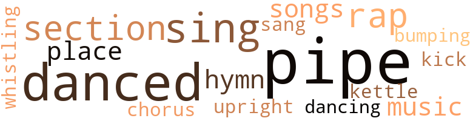
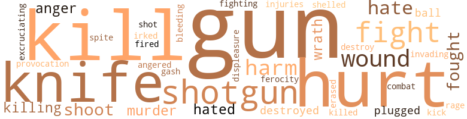

Ole Man Mose, by Montague, W. Reginald (1957)
32 music-related terms matched in this text.
Most frequent terms in this topic: pipe (8); danced (5); sing (3); rap (2); section (2)
bump.v.03
Definition: dance erotically or dance with the pelvis thrust forward
| word | sentence |
|---|---|
| bumping | After bumping along for a few minutes more they came to a pretty well run-down cabin standing on poles just about a hun - dred feet off the road . |
chorus.n.01
Definition: any utterance produced simultaneously by a group
| word | sentence |
|---|---|
| chorus | " Dead ? " came the startled chorus . |
dance.v.03
Definition: skip, leap, or move up and down or sideways
| word | sentence |
|---|---|
| danced | They danced jerkily as she spoke . |
| danced | Her eyes danced and gleamed angrily . |
| danced | He sat there placidly listening to the rantings of the wizened old black crone , as the flames of the fireplace danced upon her raging , distorted countenance . |
| danced | Ole Mose almost fell into the room ; his eyes danced wildly and he mumbled incoher - ently . |
| danced | They hopped over a stream that glittered and danced where the stabbing rays of moonlight revealed its presence in broken segments . |
| dancing | Dat road gwine run smack into Ole Mose 's place - but fust , " he added , his large eyes dancing with expression , " y' all gwine come to Shad - drack 's place but y' all jes ' keep on agoin ' . |
hymn.n.01
Definition: a song of praise (to God or to a saint or to a nation)
| word | sentence |
|---|---|
| hymn | He worked all day without uttering a single note of any of his favorite jubilee songs ; he did make several attempts to sing his hymn of hope , but something was wrong . |
kettle.n.04
Definition: a large hemispherical brass or copper percussion instrument with a drumhead that can be tuned by adjusting the tension on it
| word | sentence |
|---|---|
| kettle | Ole Mose hob - bled back to the stove again and filled up a tin cup from a steaming old-fashioned iron kettle . |
kick.v.04
Definition: kick a leg up
| word | sentence |
|---|---|
| kick | He kick de stall down an ' still he ai n't satisfied ; he done kick de wall clean out . |
music.n.01
Definition: an artistic form of auditory communication incorporating instrumental or vocal tones in a structured and continuous manner
| word | sentence |
|---|---|
| music | Then the choir would sing sweet music that would bring tears to his eyes , for it reminded him of funerals - funerals of his wife and children who had crossed the River Jordan . |
pipe.n.04
Definition: a tubular wind instrument
| word | sentence |
|---|---|
| pipe | She strode over to the mantel and filled a large corncob pipe , while Ole Mose 's eyes followed her every action . |
| pipe | After she had lit her pipe with a piece of kindling from the fireplace , she sat back in the rocker and blew several puffs of acrid smoke through her nose . |
| pipe | " It be a long story , Roots Annie , but I wo n't take so much of yo ' time 'cause I reckon it round eatin ' time an ' y' all want to get some vittles , but I - " " Ai n't no such thing as vittle time in dis house ! " she snapped , removing her pipe from her thick , red lips . |
| pipe | He continued to study the road map as he puffed on his pipe , sending up puffs of slightly aro - matic smoke . |
| pipe | Then , as if she were relieved and very much satisfied with herself , she rested back into the chair and , placing her pipe be - tween her thick lips , began to rock slowly , peering directly into the flaming kindling . |
| pipe | " Wal , lem me hear y' all trouble , " she said while she sat look - ing with a fixed stare at the burning kindling and puffed furi - ously on her corncob pipe . |
| pipe | Mose walked over to the mantel and filled his corncob pipe from a tin box . |
| pipe | His face clouded and his hand trembled as he reached for a match to relight his pipe , which had gone out dur - ing his reveries . |
place.v.16
Definition: sing a note with the correct pitch
| word | sentence |
|---|---|
| place | I asks what y' all want - do n't know why I botherin ' wid de laks of y' all in mah place nohow - tellin ' everybody dat y' all never gwine set foot in mah place an ' heah y' all a sets a squirmin ' an ' wigglin ' lak a trapped coon . " |
rap.n.05
Definition: genre of African-American music of the 1980s and 1990s in which rhyming lyrics are chanted to a musical accompaniment; several forms of rap have emerged
| word | sentence |
|---|---|
| rap | He glanced about as he waited for the response to his rap . |
| rap | They were about to rap again when the door was opened cautiously . |
section.n.01
Definition: a self-contained part of a larger composition (written or musical)
| word | sentence |
|---|---|
| section | So we thought we 'd come into this section and get a few rabbits or something . |
| section | " Ole Man Mose is obsessed with the idea that a certain section up there is cursed with the spirit of an old Confederate deserter . |
sing.v.02
Definition: produce tones with the voice
| word | sentence |
|---|---|
| sing | Then the choir would sing sweet music that would bring tears to his eyes , for it reminded him of funerals - funerals of his wife and children who had crossed the River Jordan . |
| sing | He worked all day without uttering a single note of any of his favorite jubilee songs ; he did make several attempts to sing his hymn of hope , but something was wrong . |
| sing | He was sing - ing jubilantly as he walked behind the mule . |
| sang | Meadowlarks sang from the surrounding fields . |
song.n.01
Definition: a short musical composition with words
| word | sentence |
|---|---|
| songs | He worked all day without uttering a single note of any of his favorite jubilee songs ; he did make several attempts to sing his hymn of hope , but something was wrong . |
upright.n.02
Definition: a piano with a vertical sounding board
| word | sentence |
|---|---|
| upright | Shaddrack bolted upright in his bed . |
whistle.n.01
Definition: the sound made by something moving rapidly or by steam coming out of a small aperture
| word | sentence |
|---|---|
| whistling | He heard the whistling of the starlings as they flittered about the grove . |
141 violence-related terms matched in this text.
Most frequent terms in this topic: kill (16); hurt (15); guns (14); gun (14); knife (10)
aggravation.n.02
Definition: unfriendly behavior that causes anger or resentment
| word | sentence |
|---|---|
| provocation | It affected his disposition to the extent he became impatient with his two " chillun , " Samson and Delilah , and would scold them at the least provocation . |
anger.n.01
Definition: a strong emotion; a feeling that is oriented toward some real or supposed grievance
| word | sentence |
|---|---|
| anger | There was no longer a trace of anger in the killer 's face , so complete was his change of attitude . |
| anger | So profound was her anger at the thought of being threatened that she had completely forgotten about the victim whom the killer had called Daisy . |
anger.v.02
Definition: become angry
| word | sentence |
|---|---|
| angered | In contrast , his normally white eyes were red and bloodshot ; obviously he had been angered to the point of committing murder . |
battle.v.01
Definition: battle or contend against in or as if in a battle
| word | sentence |
|---|---|
| combat | Here two young quality genamen had paid Ole Mose a friendly visit ( an unheard-of honor to begin with ) and to have their evening blackened by the curse of Ole Tosh was a disgrace almost beyond redemption , especially since he considered them his guests ; the horror of it was they would be back again to combat the curse . |
blast.v.03
Definition: use explosives on
| word | sentence |
|---|---|
| shelled | " I guess Padre shelled out heavy for it , but , after all , I am his only son and heir to the Yellow Pine Tim - ber Company , " he remarked with a mocking , lordly gesture . |
bleeding.n.01
Definition: the flow of blood from a ruptured blood vessel
| word | sentence |
|---|---|
| bleeding | Together they carried the bleeding , mortally injured Daisy inside . |
cut.n.05
Definition: a wound made by cutting
| word | sentence |
|---|---|
| gash | Chester had removed Matt 's breeches , and on his thigh was an ugly gash that had bled pro- fusely but now was checked by a tourniquet made from a belt Chester 's hands were covered with blood , and in his excitement he had placed his hands against his face , leaving large blotches . |
destroy.v.04
Definition: put (an animal) to death
| word | sentence |
|---|---|
| destroyed | After he had accomplished his purpose and destroyed that Ole Devil Tosh , he would pray and ask his Jesus to forgive him for having had anything to do with Roots Annie - and his Jesus would , because his Jesus understood . |
| destroy | He was confident that he would destroy him now . |
| destroyed | He found himself back at the window again staring into the dark shadows outside where all objects were either lost or destroyed . |
displeasure.n.01
Definition: the feeling of being displeased or annoyed or dissatisfied with someone or something
| word | sentence |
|---|---|
| displeasure | He had even chanced arousing the displeasure of his Jesus , and he wondered if his soul was lost . |
erase.v.01
Definition: remove from memory or existence
| word | sentence |
|---|---|
| erased | True , these sights had sickened him in his younger days , but time had erased most of the gory details of savage spectacles . |
ferocity.n.01
Definition: the property of being wild or turbulent
| word | sentence |
|---|---|
| ferocity | It must have been around two o'clock in the morning when he stumbled on Shaddrack 's stoop and banged with such ferocity that he frightened his neighbor half out of his wits . |
fight.n.05
Definition: a boxing or wrestling match
| word | sentence |
|---|---|
| fight | I asked mah Jesus To help me win dis fight An ' to take mah troubles away . |
| fight | He was well fortified for the fight . |
fight.v.02
Definition: fight against or resist strongly
| word | sentence |
|---|---|
| fight | " Do n't dose white folk know dey cai n't fight no curse ? " he mumbled , as he reviewed Matt 's final remark . |
| fight | Got to fight fire wid fire . " |
| fight | He came down the rock-strewn roadway and set to a pace , mumbling quietly , " Yas , Jesus , y' all must fight fire wid fire an Jesus forgive me but dat is de only way - yas , Jesus , dat is de only way I ' se gwine to Roots Annie . |
| fight | He was determined to fight fire with fire . |
| fought | Ole Mose was actually shaking by this time , but he fought the fear with all the strength remaining in his tired old body . |
| fought | He fought back his nervous - ness valiantly . |
| fighting | Some robins were busily fighting over a worm that had been disturbed from its resting place by the shining blade of the plow . |
| fought | He claimed that at the time the Yankees were marching on to Vicks - burg his slaves fought to a man to stem the invaders . |
fury.n.01
Definition: a feeling of intense anger
| word | sentence |
|---|---|
| rage | Roots Annie , in a furious rage , swung the door wider and held the lamp above her head , causing it to throw the light full on her face . |
gall.v.02
Definition: irritate or vex
| word | sentence |
|---|---|
| irked | " Wal , nohow , " Ole Mose continued , slightly irked at the pos - sible thought that his cherished revelation should have a shadow of doubt cast over its veracity . |
gun.n.01
Definition: a weapon that discharges a missile at high velocity (especially from a metal tube or barrel)
| word | sentence |
|---|---|
| guns | " I 'm ready - now we 'll get started , " and , turning to Mose , he said nervously , " Do n't forget to get those guns down in the hollow . |
| guns | " I 's gwine to git y' all guns for ya . |
| gun | Ole Tosh raised his gun , still laughing in that diabolical fash - ion , and fired several shots into Ole Mose , who immediately feigned death . |
| guns | " With his bats , haunts and curses - Incidentally , pardner , did you get those guns yet ? " |
| guns | Why we ran olf like that leaving our guns and hats is more than I can fathom . |
| guns | I wonder if Ole Mose took care of those guns , by the way . " |
| guns | " Ole Man Mose would lose his right eye but not those guns . |
| guns | On reaching the car , Chester exclaimed to Matt , " Say , what about our guns ? " |
| guns | Say , Obadiah , do you know about any guns that were left here last fall ? " |
| guns | Ole Mose had oiled and greased the guns before tying them in burlap . |
| guns | Chester glanced with admiration at the guns resting in the crook of Obadiah 's arms . |
| guns | " Obadiah , it was real swell of you to take care of those guns all this time and we appreciate it very much . " |
| gun | " Yes , I guess you have something there , but let 's get going , " Chester reminded , tucking his gun under his arm . |
| guns | They were clear and distinct in the moon - light with their bristling guns and their shining leather jerkins and Samson trailing faithfully at their heels . |
| guns | Mose understood the situation , and realized that Chester did n't know the whereabouts of the guns or hats any more than he did . |
| guns | We gripped our guns tightly and peered ahead , alert for anything that might appear . " |
| gun | I raises mah gun an ' fires jes ' dat quick . |
| gun | Wal , naturally I still has mah gun in mah other hand too . |
| gun | There , right in front of me , is dis ole ; witch man pointin ' a gun at me so close dat I could n't move . |
| gun | Wal , tell General Bragg I ai n't fightin ' no mo ' - jes ' sick an ' tired of fightin ' , ' an ' then he poked dat ole gun right into mah ribs an ' says , ' I ai n't figurin ' on hangin ' , so start prayin ' , darky , 'cause I 'm lettin ' ya have it right now , too . |
| gun | When I felt his gun against me an ' though I had mah gun in de crook of mah arm I was afraid to move - I guess I was so scared I could n't move . |
| gun | When I felt his gun against me an ' though I had mah gun in de crook of mah arm I was afraid to move - I guess I was so scared I could n't move . |
| gun | Lawsy , a whole mess of things goes through mah haid when I feels dis crazy man 's gun against mah ribs . |
| gun | When I do n't hear no noise from his gun , I realize that dis ole fool want to punish me sort of foh shootin ' at him an ' he wants to worry me some afore he kill me . |
| gun | I guess de Lord done hear mah prayer , 'cause dis fool ai n't shoot dat gun off yet . |
| gun | I begs him not to kill me , but he tryin to pull de trigger , but I reckon it so long since he use dat ole gun dat it gone an ' rust on him , 'cause he pull but nuthin ' happen . |
| gun | When I sees dis , I quick lak hit him cross de haid wid mah gun , an ' he go on down lak a mule done hoof him . |
| gun | Your good will and hopefulness should help " " I got somethin' on dat laig dat gwine keep out ole debil gun poison . |
harm.v.01
Definition: cause or do harm to
| word | sentence |
|---|---|
| harm | He cai n't harm a hair on yo ' haid , while dis candle be lit , an ' he gwine think y' all be he Massa , an ' he gwine be a-comin ' to see what y' all want from him - but iffen dis candle go out - ai n't a livin ' soul gwine be able to help y' all an ' ai n't no need of callin ' on yo ' Massa 'cause even he cai n't help y' all 'cause y' all be workin ' wid do enemy . " |
| harm | Ole Mose , in his dream , pleaded with Ole Tosh not to harm him and to leave him alone . |
| harm | Then all was dark and oblivious , for Ole Tosh , enraged and embittered at the thought of Ole Mose attempting to harm him in some fashion or other , dealt a revengeful blow of unusual force , not unlike a wounded beast that charges the hunter . |
| harm | Dey knows I ai n't aimin ' to harm 'em ; lil angels , dat 's what dey is ! " |
hate.n.01
Definition: the emotion of intense dislike; a feeling of dislike so strong that it demands action
| word | sentence |
|---|---|
| hate | It was true that Roots Annie enjoyed being feared and hated , and never lost an oppor - tunity to display her hate and wrath to everyone that she came in contact with . |
hate.v.01
Definition: dislike intensely; feel antipathy or aversion towards
| word | sentence |
|---|---|
| hated | A great many of the hill folks hated her but would never voice their feeling , so deep-rooted was the fear of her power . |
| hate | " I ai n't got no worries - folks hate me but dey keep a-comin ' - dat 's mah Massa 's work . |
| hated | It was true that Roots Annie enjoyed being feared and hated , and never lost an oppor - tunity to display her hate and wrath to everyone that she came in contact with . |
| hates | I hates Yankees but I hates fightin ' worse , ' his voice jes ' a squealin ' . " |
| hates | I hates Yankees but I hates fightin ' worse , ' his voice jes ' a squealin ' . " |
hurt.v.04
Definition: cause damage or affect negatively
| word | sentence |
|---|---|
| hurt | " Is y' all hurt bad , Daisy ? " |
| hurt | " No , nuthin ' gwine hurt y' all ! |
| hurt | " Ole Mose , " he be - gan , " ai n't had to go from here so soon , but it seem dat a couple of white genamen comed down here to hunt possum and one of 'em got hurt pretty bad - is y' all de genamen ? " he said to Matt , who was standing there resting on his cane . |
| hurt | " For God 's sake , hurry , Mose - Matt is hurt . " |
| hurt | " Suh , " Mose said in an appealing tone , " I think it be better foh y' all to fetch de doctah here den try to move him an ' git lost , wid dat genamen hurt so bad . |
injury.n.01
Definition: any physical damage to the body caused by violence or accident or fracture etc.
| word | sentence |
|---|---|
| injuries | This was now almost completely covered with red blotches from her injuries . |
| hurt | He had never decided not to go through with his plans , but the thought of Matt 's boy getting hurt and the possibility of his coming back to a fate that might be worse spurred Ole Mose on . |
| harm | He picked up his lantern , carefully raised the globe , ignited the candle that Roots Annie had explained as the direct medium between the living and the dead , and which acted as a formi - dable barrier of protection from any harm that might befall him . |
| hurt | I runs up to give him a finishin ' shot , but when I sees him dere lookin ' all helpless lak he look at me wid dose big round , dark eyes , an ' it were n't no ordinary look , it was a look dat seem to say , T 's hurt enough already ; do n't shoot me no mo ' . |
| hurt | Even though he did act a lot of foolishment wid Roots Annie over dat curse dat he thought was gwine hurt dose quality boys , he was sho a good man in his time , " Obadiah said with emphasis . |
| hurt | " I reckon he gwine be right smart agin , but he got a nasty hurt . |
| hurt | Den it look like he slip , I guess on account of dat hurt laig , an ' he fall over an ' hit his haid on a rock an ' knock himself out cold . " |
| hurt | " I do n't know what y' all means wid dat dicty sayin ' , but if y' all mean dat he ai n't gwine have no poison in dat hurt laig , I be powerful sho of dat . " |
invade.v.01
Definition: march aggressively into another's territory by military force for the purposes of conquest and occupation
| word | sentence |
|---|---|
| invading | In fact , he believes my getting hurt to be the direct result of my invading this for - bidden territory . " |
kick.v.04
Definition: kick a leg up
| word | sentence |
|---|---|
| kick | He kick de stall down an ' still he ai n't satisfied ; he done kick de wall clean out . |
kill.v.10
Definition: cause the death of, without intention
| word | sentence |
|---|---|
| kill | Tom , please do n't kill me . " |
| kill | I told her iffen Emma Mae die , I gwine kill her an ' y' all too - an ' Christ know I mean it ya ole black wench of a devil . " |
| kill | I stayed at Sadie 's till dark , den I start over here to give y' all warning ; 'cause Tom say he gwine kill me an ' dat debil Root woman to boot . " |
| kill | " Wal , he done kill her , but I gwine fix dat black stinkin ' bile of a skunk . |
| kill | He gwine kill me , huh ? " |
| killed | His throat was literally tom from ear to ear , reminding Mose of the way wolves killed sheep . |
| kill | " Wal , I guess I 'll git Shaddrack to help me kill dat hog tomorrow or next day . |
| kill | " I shoot him but I did n't kill him . |
| kill | Jes ' cai n't kill dat ole chuck even when I catched him a-thievin ' . |
| killing | It read : " I knows it 's long past hog - killing time , but I ai n't going be needing no hog nor hog meat no more . |
| kill | I done had Roger kill three of 'em dis morning an ' I ai n't gwine say nuthin ' Tout dat cake . |
| kill | He done got to messin ' round wid de curse an de evil spirit most kill him . |
| kill | By dis time Shad - drack done wake up an ' come runnin ' wid de lantern an ' he see dat fool mule run headlong into dat big , ole oak tree and kill heself . |
| kill | When I do n't hear no noise from his gun , I realize that dis ole fool want to punish me sort of foh shootin ' at him an ' he wants to worry me some afore he kill me . |
| kill | " Yas suh , I 'll say he was , but crazy folks can kill jes ' as well as de other kind . " |
| kill | One day I watch 'em a long time , den I decides to kill 'em , same as I 'm gwine kill you . |
| kill | One day I watch 'em a long time , den I decides to kill 'em , same as I 'm gwine kill you . |
| kill | I begs him not to kill me , but he tryin to pull de trigger , but I reckon it so long since he use dat ole gun dat it gone an ' rust on him , 'cause he pull but nuthin ' happen . |
killing.n.01
Definition: an event that causes someone to die
| word | sentence |
|---|---|
| killing | Ole Mose started to turn his face away from what seemed to be an inevitable killing . |
knife.n.02
Definition: a weapon with a handle and blade with a sharp point
| word | sentence |
|---|---|
| knife | As he stood erect over his now prostrate victim , Ole Mose saw by the dim light of the lamp that he held a long , bloodstained knife in his hand . |
| knife | He stepped over the prostrate form and started toward Roots Annie , firmly clutching his knife . |
| knife | Tom raised the knife to strike , but as he did so , Roots Annie thrust her face within a foot of his and the sound that emanated from between her lips seemed to come out in hisses , not unlike the noise of a serpent . |
| knife | His hat came off and he dropped his knife . |
| knife | Dat black ape done pull dat knife foh de last time , " she explained , quite satisfied with herself . |
| knife | Finally , Roots Annie , tired of cursing and blaspheming the knife wielder , now turned her attention to Ole Mose . |
| knife | " Oh yas , " agreed Ole Mose , beaming , " dey is de best all right " The conversation struck a lull as Mose attacked the tough piece of bacon with a dull knife . |
| knife | Laying his knife and fork down slowly , he glanced at Chester with worried eyes . |
| knife | Laying down his knife and fork once more , he began softly , " Genamen y' all ai n't ever goin ' to understand . |
| knife | Chester offered his pocket knife to Matt to cut the string . |
malice.n.01
Definition: feeling a need to see others suffer
| word | sentence |
|---|---|
| spite | He became frightened and turned about and ran to - ward his cabin , running spryly in spite of his age . |
murder.n.01
Definition: unlawful premeditated killing of a human being by a human being
| word | sentence |
|---|---|
| murder | In contrast , his normally white eyes were red and bloodshot ; obviously he had been angered to the point of committing murder . |
| murder | But , on the contrary , it was in truth a frightfully malignant hovel with murder and intrigue lurking in the very comers . |
musket_ball.n.01
Definition: a solid projectile that is shot by a musket
| word | sentence |
|---|---|
| ball | The moon had risen in a golden ball but was now diminished in size and rode high in the heavens , casting its uneven beams upon the landscape below . |
| ball | Then Ole Mose glanced over his shoulder out of the window into the night where the moon was rising in a large , red ball . |
open_fire.v.01
Definition: start firing a weapon
| word | sentence |
|---|---|
| fired | Ole Tosh raised his gun , still laughing in that diabolical fash - ion , and fired several shots into Ole Mose , who immediately feigned death . |
pain.v.02
Definition: cause emotional anguish or make miserable
| word | sentence |
|---|---|
| hurt | It really hurt him deeply inside to have to part with this present from Matt 's boy , but he knew Roots Annie 's price was high , and since what he was doing was for the sake of Matt 's boy his anguish became somewhat eased . |
| hurt | " An ' I 's gwine on home an ' rest lak y' all says - ai n't nuthin ' gwine hurt me ? " |
| hurt | This hurt him deeply . |
| hurt | I started to carry him , but I did n't know how bad he was hurt . |
punch.v.01
Definition: deliver a quick blow to
| word | sentence |
|---|---|
| plugged | I plugged him fust , ' he says , ' den I plugged her . |
| plugged | I plugged him fust , ' he says , ' den I plugged her . |
shoot.v.02
Definition: kill by firing a missile
| word | sentence |
|---|---|
| shot | He recalled how many years ago he had shot a woodchuck who was marauding his cabbage patch . |
| shoot | I runs up to give him a finishin ' shot , but when I sees him dere lookin ' all helpless lak he look at me wid dose big round , dark eyes , an ' it were n't no ordinary look , it was a look dat seem to say , T 's hurt enough already ; do n't shoot me no mo ' . |
| shoot | It see me an ' it start to yell , ' Do n't shoot - do n't shoot no mo ' . ' |
| shoot | I guess de Lord done hear mah prayer , 'cause dis fool ai n't shoot dat gun off yet . |
shotgun.n.01
Definition: firearm that is a double-barreled smoothbore shoulder weapon for firing shot at short ranges
| word | sentence |
|---|---|
| shotgun | " And I am sure I can get along nicely for the rest of my days without having a beautiful ten-gauge shotgun blasted in my direction , " Matt said impressively . |
| shotguns | " Oh , sho , sho , y' all means long shotguns . " |
| shotguns | After the brief repast they unpacked and assembled their shotguns . |
| shotgun | He picked up his double-barreled shotgun and fondled it tenderly . |
| shotguns | We have a few first-class shotguns for ghosts , curses or zombis . |
| shotgun | Now , to prove to you that we mean business , I am going to load up right here , " he went on , and proceeded by slipping two shells into the double-barreled shotgun . |
| shotgun | He had just started down the rickety steps , in the direction of the howling dog , when he heard the report of a shotgun . |
| shotguns | Mose noticed that both the shotguns were missing as well as the young men 's hats ; he looked about cautiously , but did n't see them in the vicinity where they had been standing . |
torment.v.01
Definition: torment emotionally or mentally
| word | sentence |
|---|---|
| excruciating | Every time he at - tempted to move , excruciating pain coursed through his frame . |
wound.n.01
Definition: an injury to living tissue (especially an injury involving a cut or break in the skin)
| word | sentence |
|---|---|
| wound | Mose cleansed the wound with warm water first , then went to the chest in the corner and brought out a winter undershirt . |
| wound | He took an old tin box from the shelf and shook some of the contents onto the gaping wound he had just cleansed . |
| wounds | It was an odd , flaky substance , consisting of some sort of herbs that Ole Mose could swear by for gunshot wounds . |
| wound | Then he bound up the wound with more strips of the undershirt . |
| wound | The doctor re - moved the tourniquet and the bandages in order to examine the wound . |
| wound | Sometimes these darkies do have some mighty remarkable remedies , " he remarked to Ches , as he washed and cleansed the wound . |
wrath.n.01
Definition: intense anger (usually on an epic scale)
| word | sentence |
|---|---|
| wrath | Ole Mose tried to turn away , to tell himself it was not so , but his morbid curiosity got the better of him and as he held the lantern with a trembling arm he witnessed what had befallen one who indiscreetly aroused the wrath of Roots Annie . |
| wrath | It was true that Roots Annie enjoyed being feared and hated , and never lost an oppor - tunity to display her hate and wrath to everyone that she came in contact with . |
60 religion-related terms matched in this text.
Most frequent terms in this topic: Satan (12); Jesus (11); Devil (9); devil (7); church (6)
blessing.n.05
Definition: the act of praying for divine protection
| word | sentence |
|---|---|
| blessing | " Yas suh , " he began after mumbling a brief blessing over his simple food , " it is sho good to see y' all , Mist ' Matt , dat 's what I used to call his pappy , " he said , glancing in the direction of Chester Niles . |
christian.n.01
Definition: a religious person who believes Jesus is the Christ and who is a member of a Christian denomination
| word | sentence |
|---|---|
| Christian | He take de Bible in de bunk wid him when he waitin ' foh Gabriel to blow his horn , an anythin ' Satan is scared of is a Bible , an ' Ole Mose know dat too , an ' he do n't forget it , 'cause he was a Gawd-fearin ' Christian too long to forget it . |
church.n.02
Definition: a place for public (especially Christian) worship
| word | sentence |
|---|---|
| church | This he did for six days a week when the weather per - mitted , and on the Sabbath , he would ride to a suburb of Pine - ville with Shaddrack and his family , where they would attend a small church . |
| church | Now , when he went to church with Shaddrack on Sundays and the minister would shout about the power and the destruc - tion of the Devil , Ole Mose imagined he was speaking of but one thing and that was Ole Tosh . |
| church | When he failed to show up the following Sunday morning for his weekly trip to church , Shad - drack 's daughter , Lucy May , was sent up to his cabin to see what had happened to him . |
| church | When she came upon the stoop , he beckoned her to the window where , with signs and gestures , he pointed to his bound face , trying to convey the im - pression that he had neuralgia or a toothache , and motioned that he would not be going to church with them . |
| church | Also , not to bother calling for him to go to church on Sundays any more be - cause he would not be going . |
| church | Ai n't nobody see him leave his place , ai n't goin ' to church no mo ' - jes bought a nice new Bible to boot . |
eden.n.01
Definition: any place of complete bliss and delight and peace
| word | sentence |
|---|---|
| heavens | The moon had risen in a golden ball but was now diminished in size and rode high in the heavens , casting its uneven beams upon the landscape below . |
| heavens | He gazed at the heavens through the trees . |
| heavens | The sun was warm and there was not a cloud in the bright blue heavens . |
god.n.03
Definition: a man of such superior qualities that he seems like a deity to other people
| word | sentence |
|---|---|
| God | Please - always remember that he loved them like he did his own children and might God always bless them . |
| God | " For God 's sake , hurry , Mose - Matt is hurt . " |
hymn.n.01
Definition: a song of praise (to God or to a saint or to a nation)
| word | sentence |
|---|---|
| hymn | He worked all day without uttering a single note of any of his favorite jubilee songs ; he did make several attempts to sing his hymn of hope , but something was wrong . |
jesus.n.01
Definition: a teacher and prophet born in Bethlehem and active in Nazareth; his life and sermons form the basis for Christianity (circa 4 BC - AD 29)
| word | sentence |
|---|---|
| Jesus | " Lord Jesus , dere must be a way - dere must be a way ! |
| Jesus | I asked mah Jesus To help me win dis fight An ' to take mah troubles away . |
| Jesus | He came down the rock-strewn roadway and set to a pace , mumbling quietly , " Yas , Jesus , y' all must fight fire wid fire an Jesus forgive me but dat is de only way - yas , Jesus , dat is de only way I ' se gwine to Roots Annie . |
| Jesus | After he had accomplished his purpose and destroyed that Ole Devil Tosh , he would pray and ask his Jesus to forgive him for having had anything to do with Roots Annie - and his Jesus would , because his Jesus understood . |
| Jesus | After he had accomplished his purpose and destroyed that Ole Devil Tosh , he would pray and ask his Jesus to forgive him for having had anything to do with Roots Annie - and his Jesus would , because his Jesus understood . |
| Jesus | After he had accomplished his purpose and destroyed that Ole Devil Tosh , he would pray and ask his Jesus to forgive him for having had anything to do with Roots Annie - and his Jesus would , because his Jesus understood . |
| Jesus | Then Jesus took her , leaving him alone in his cabin these many years . |
| Jesus | Jesus ' Name , " he said in a contrasting tone of sup - plication , " what is I gwine do ? " |
| Jesus | I done asked Jesus to take care of y' all an ' he done did , 'cause de other folks dat goed down in Woeful Valley was n't so lucky . " |
| Jesus | He asked his Jesus for the power to rid the valley of the curse of Ole Tosh . |
| Jesus | " For your sake , my sake and Jesus ' sake . " |
messiah.n.01
Definition: any expected deliverer
| word | sentence |
|---|---|
| Christ | I told her iffen Emma Mae die , I gwine kill her an ' y' all too - an ' Christ know I mean it ya ole black wench of a devil . " |
prayer.n.01
Definition: the act of communicating with a deity (especially as a petition or in adoration or contrition or thanksgiving)
| word | sentence |
|---|---|
| prayer | I guess de Lord done hear mah prayer , 'cause dis fool ai n't shoot dat gun off yet . |
preacher.n.01
Definition: someone whose occupation is preaching the gospel
| word | sentence |
|---|---|
| preacher | " Ole Mose see Josh come down from de University to see dat he pappy git a right an ' proper burial - you know - wid a preacher an all dat 'cause Ole Mose did n't belong to no buryin ' society or nuthin ' . |
| preacher | Shaddrack done say he might have to make a coffin foh Ole Mose an ' fetch him a preacher an ' he worry most to death 'cause he done wrote to Joshua a spell back dat his pappy was ailin ' in de haid . |
religion.n.01
Definition: a strong belief in a supernatural power or powers that control human destiny
| word | sentence |
|---|---|
| faith | Even while he was uttering these words , Ole Mose did not place too much faith in Roots Annie . |
satan.n.01
Definition: (Judeo-Christian and Islamic religions) chief spirit of evil and adversary of God; tempter of mankind; master of Hell
| word | sentence |
|---|---|
| Devil | Now , when he went to church with Shaddrack on Sundays and the minister would shout about the power and the destruc - tion of the Devil , Ole Mose imagined he was speaking of but one thing and that was Ole Tosh . |
| Devil | It appeared to him a yawning monster that em - ployed its irresistible beauty to lure unfortunate unbelievers into its depth , where they would be destroyed by the very Devil him - self . |
| Devil | They claimed that she had been reincarnated or resurrected , as the hill folks say , by the Devil , and was destined to serve him indefinitely ; as soon as she failed to do her duty she would suddenly drop dead . |
| devil | Ole Tosh in his estimation was a devil , so it was just pitting one devil against another . |
| devil | Ole Tosh in his estimation was a devil , so it was just pitting one devil against another . |
| Devil | Iffen I wants to hob - nob wid de Devil , dats mah business , an ' iffen y' all do n't lak mah business , y' all would n't be here ! " she shrieked . |
| Devil | She was working for the Devil , a self-confessed disciple , and he , a God - fearing Christian man , should be in her company ! |
| devil | I told her iffen Emma Mae die , I gwine kill her an ' y' all too - an ' Christ know I mean it ya ole black wench of a devil . " |
| Devil | This old woman was possessed by the Devil , he was certain of that . |
| devil | A woman who could be so fearless and defiant in the face of what appeared to be certain death was surely a devil . |
| devil | This must be her workshop - the devil 's workshop - thought Mose , as he glanced at the odd things that cluttered the room . |
| Devil | " Dis is sho de Devil 's workshop , " he said to himself . |
| devil | " I do n't know what on earth made y' all go to dat ole she - devil . |
| devil | " Yas , Mose , it a bit late in life foh y' all to go messin ' round Roots Annie 's kind , an ' how can a devil lak dat do a body some good - she jes ' cai n't , dat 's all , " Shaddrack exclaimed emphati - cally . |
| Devil | After he had accomplished his purpose and destroyed that Ole Devil Tosh , he would pray and ask his Jesus to forgive him for having had anything to do with Roots Annie - and his Jesus would , because his Jesus understood . |
| Satan | He had gone to such extremes to prepare for hobnobbing with the servant of Satan . |
| Satan | Then the realization came to him that , although he was n't dead , the dead man had left his brand upon him , one that he would carry for the rest of his days and all the folks who gazed upon his face would know that he was branded by a servant of Satan . |
| Devil | He was beginning to pay for his sin of consorting with the Devil . |
| Satan | Guess he reckons dat Roots Annie done gwine send Satan fer his spirit , " Obadiah said , shaking his head dubiously . |
| Satan | " Of course , now maybe dat pure darky foolishment , but Shaddrack done say dat Roots Annie done tried to bargain wid Ole Mose foh his soul , an ' we all figure dat she know Ole Mose gwine die so she send Satan to wait round foh he soul . |
| Satan | He take de Bible in de bunk wid him when he waitin ' foh Gabriel to blow his horn , an anythin ' Satan is scared of is a Bible , an ' Ole Mose know dat too , an ' he do n't forget it , 'cause he was a Gawd-fearin ' Christian too long to forget it . |
| Satan | Dat how bad Satan whip her . |
| Satan | " Satan was so sure of gettin ' Ole Mose soul , 'cause Mose had so much trouble . |
| Satan | When he started a-hobnobbin ' wid Roots Annie dat seem to convince Satan dat Ole Mose was his . |
| Satan | Satan so mad now he run round crazy lak . |
| Satan | Satan ai n't losin ' no time . |
| Satan | Satan must a git dat soul 'cause Satan ai n't gwine be outdone . |
| Satan | Satan must a git dat soul 'cause Satan ai n't gwine be outdone . |
sermon.n.02
Definition: a moralistic rebuke
| word | sentence |
|---|---|
| sermon | He would sit there solemnly while the minister would shout his sermon and the folks would yell " Amen " or " Hallelujah . " |
temple.n.03
Definition: an edifice devoted to special or exalted purposes
| word | sentence |
|---|---|
| temples | His temples throbbed violently - everything he had ever heard or known about Ole Tosh coursed through his mind in those few seconds . |